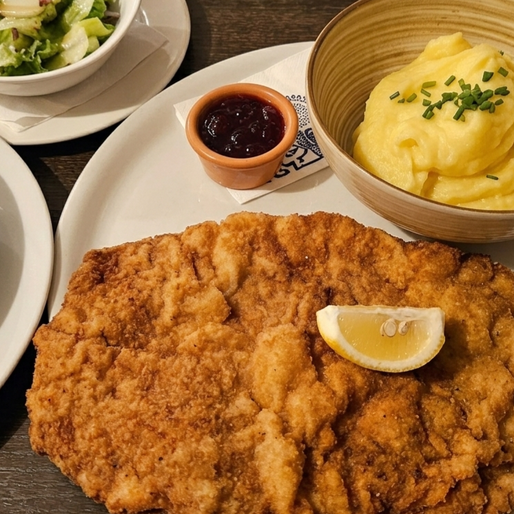
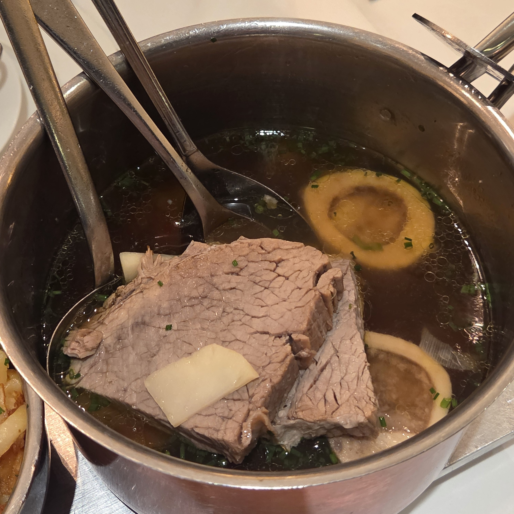
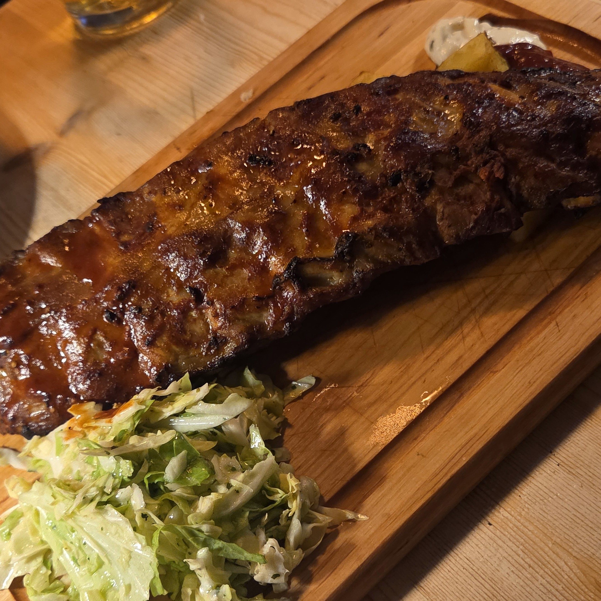
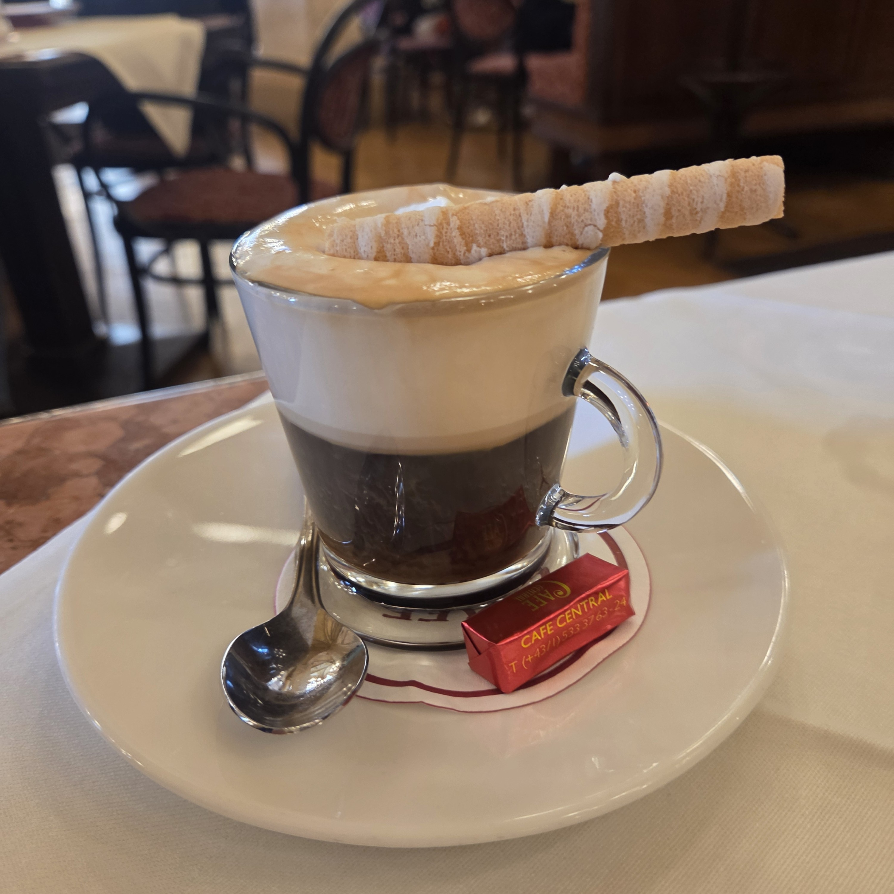
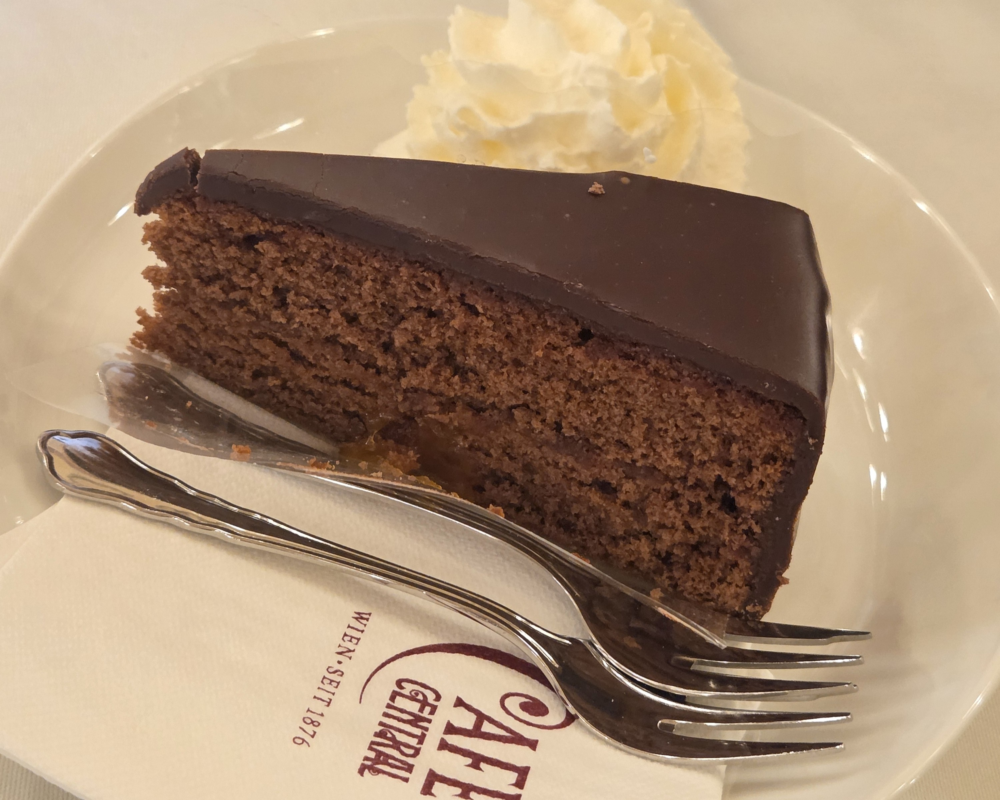

Austria

VIENNA
비엔나 야경도 식후경
MUST EAT 이건 꼭 먹어야 해!
Schnitzel

- 얇게 편 고기를 튀겨낸 오스트리아식 커틀릿
- 한국의 돈가스와 유사한 비주얼
- 바삭한 튀김옷과 촉촉한 고기의 조화가
특징
- 주로 감자 샐러드나 레몬과 곁들여 먹음
- 한국의 돈가스와 유사한 비주얼
- 바삭한 튀김옷과 촉촉한 고기의 조화가
특징
- 주로 감자 샐러드나 레몬과 곁들여 먹음
Tafelspitz

- 오스트리아의 대표적인 전통 소고기 요리
- 한국의 갈비탕과 유사한 담백한 국물 요리
- 함께 제공되는 사과 소스를 곁들이는 것이
정석
- 함께 나오는 골수는 빵에 발라 소금,
후추로 간을 해 먹는 것이 별미
- 가격대가 다소 높은 편
- 한국의 갈비탕과 유사한 담백한 국물 요리
- 함께 제공되는 사과 소스를 곁들이는 것이
정석
- 함께 나오는 골수는 빵에 발라 소금,
후추로 간을 해 먹는 것이 별미
- 가격대가 다소 높은 편
Pork Ribs

- 비엔나 여행 시 절대 놓칠 수 없는 바비큐
요리
- 달콤짭짤한 소스를 발라 오븐에 구워냄
- 겉은 바삭하고 속은 부드러운 식감과
풍부한 육즙이 특징
요리
- 달콤짭짤한 소스를 발라 오븐에 구워냄
- 겉은 바삭하고 속은 부드러운 식감과
풍부한 육즙이 특징
후기: 생각보다 익숙한 맛이라 큰 기대는
안 하는 걸 추천
안 하는 걸 추천
EXPERIENCE 커피향과 함께 즐기는 빈의 휴식


Cafe Culture
• 비엔나 커피하우스 문화
- 오스트리아 비엔나의 유네스코 무형문화유산- 눈치 보지 않고 커피와 디저트를 여유롭게 즐기는 비엔나만의
독특한 문화
- 고풍스러운 인테리어와 클래식한 분위기가 특징
• 3대 카페
- 자허(Sacher): '오리지널 자허토르테'의 원조- 센트럴(Central): 화려한 네오 르네상스 인테리어
- 데멜(Demel): 과거 왕실에 납품했던 유서 깊은 디저트 맛집